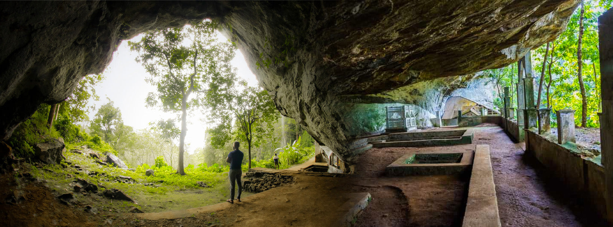
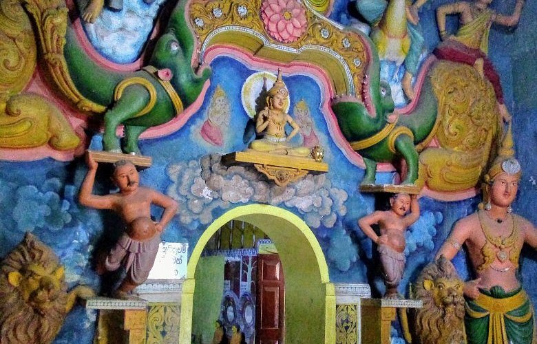
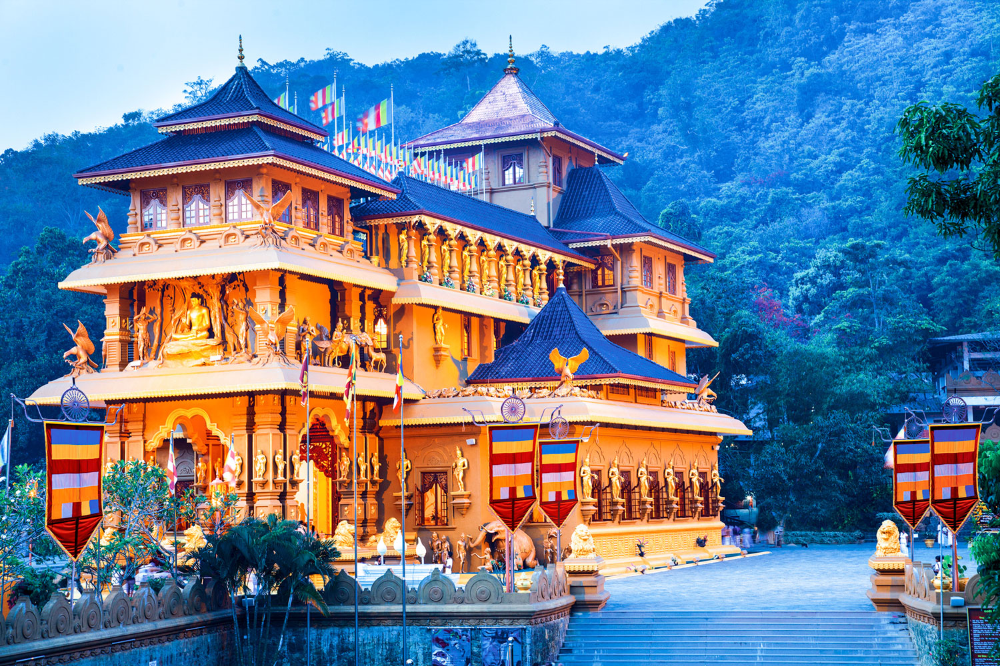

Ella’s heritage is far more than its ancient temples and timeless legends — it is the living heart of Sri Lanka’s cultural and spiritual identity. Every site tells a story of devotion, artistry, and resilience. Wandering through Ella is like stepping into history itself, connecting you with the true spirit of the island.
Rising majestically to 1,527 meters, Narangala Mountain is a stunning natural landmark deeply woven into the heritage of Uva Province. Its name, meaning “golden rock,” reflects the warm glow its slopes take on at sunrise. Climbing it is a journey through history, spirituality, and the soul of the highlands.

Just 2 km from the town, the Ravana Cave is deeply rooted in the legends of King Ravana. Believed to have sheltered Princess Sita from the epic Ramayana, the cave also reveals archaeological traces of human life dating back to 20,000 BC.

Hidden within lush greenery, the Dowa Rock Temple dates back over 2,000 years to the reign of King Valagamba. Inside, you’ll find ancient Buddha statues, beautiful wall paintings, and a massive unfinished Buddha image carved into the rock face.

Perched peacefully on a hill, the Mahamevnawa Monastery is home to dozens of monks dedicated to meditation and spiritual life. Visitors come here to find inner peace and listen to the calm sound of temple bells echoing across the valley.